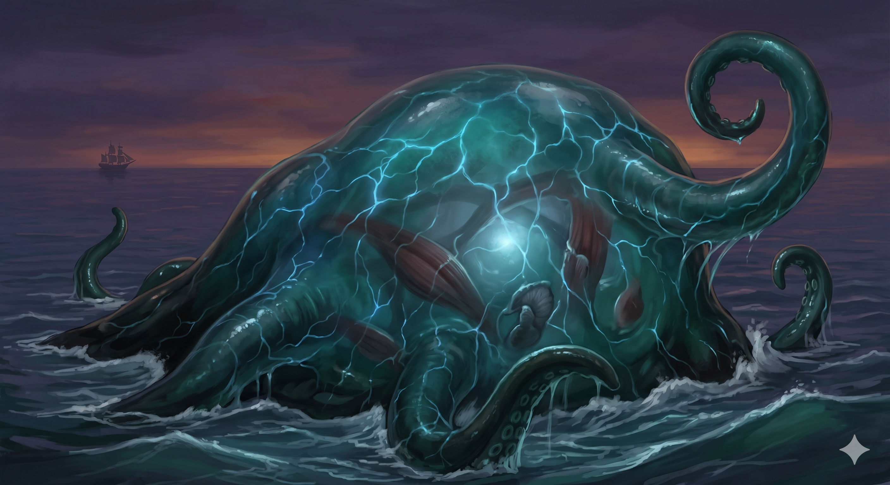

Appears in: Couch Potato Crisis
Profile

- Appears in: Couch Potato Crisis
- Aliases: Blobby
- Cross-book continuity: also appears in Chaos
- Species: Slime (dread-fiend variant)
- Class: Bard
- Orb: Bearer of the Orb of Water (carried inside his body)
- Personality: Blobby is a tragic antagonist and reluctant ally-figure driven by obsession and loneliness. As a dread-fiend slime — a massive, far more powerful variant of the common slime — he occupies a unique position in the world: too dangerous to ignore, too emotionally broken to be purely villainous. He is defined by an obsessive fixation on [Tasha Singleton](./character-tasha-singleton.html) that draws him relentlessly toward the plot, trailing the party across the sea lanes like a living natural disaster. The Orb of Water, embedded inside his body, amplifies his power to catastrophic levels, granting him water control and destructive pressure — and the crisis_wiki_draft notes Tasha’s epilogue theory that elemental orbs push their bearers into villain roles for the amusement of the Aire, a framework that reframes Blobby’s obsession as something closer to cosmic compulsion. His bard class adds an unexpected artistic dimension to an otherwise terrifying creature; he is not merely a monster but a being with a creative, performative inner life that has been distorted by centuries of isolation and the orb’s influence. Gelkorus, the most strategically minded member of Zhakara’s leadership, treats Blobby’s unknown whereabouts as a decisive factor against naval invasion — a single creature whose movements reshape military strategy across entire oceanic regions.
- Backstory: Blobby’s history reaches back to the prior generation of orb-bearers and Players, decades before Tasha’s story begins. [Jak Singleton](./character-jak-singleton.html)'s letters and diary (revealed in Chapter 22, The Fifth Player) contextualise “the older orb quest, Franklin Zhakara, Ceridwen, Blobby, and the prior generation,” placing Blobby at the centre of events that shaped the world Tasha inherits. He was connected to the priestess Ceridwen (Ceri), who Jak’s letters describe as “tied to Blobby’s tragedy” — a phrasing that suggests a catastrophic event, likely involving loss, betrayal, or the orb’s corruptive influence, that transformed Blobby from whatever he once was into the dread-fiend pursuing Tasha. As a slime bard carrying one of the four elemental orbs, Blobby represents the road not taken for [Sir Slimon](./character-sir-slimon.html): both are slimes, both are bards of a sort, but where Slimon found love, purpose, and belonging as a paladin at Brightwind, Blobby was shaped by the Orb of Water into something vast, lonely, and dangerous. His decades (possibly centuries) of isolation in the deep ocean, combined with the orb’s corruptive influence, forged the obsession that drives him through Crisis.
- Significant story events:
- Pre-story — The Prior Orb Quest: Active during the era of [Jak Singleton](./character-jak-singleton.html)'s Player generation, connected to Franklin Zhakara, Ceridwen, and the earlier orb-bearers. Jak’s letters reveal Blobby’s tragedy as a formative event in Etherian history.
- Chapter 5 — Sea Dogs (Crisis): Blobby, obsessed with Tasha and carrying the Orb of Water, begins moving toward the plot. The chapter establishes his pursuit as a slow, inexorable force — something vast and inevitable approaching from the deep.
- Chapter 8 — Heeeere’s Blobby! (Crisis): The chapter named in Blobby’s honour. Tasha’s group continues their voyage while Blobby closes in, the tension building toward the confrontation that gives the chapter its title (a nod to “Heeeere’s Johnny!” from The Shining). K’her is shown in decline, framing Blobby’s approach against the pirate king’s fall — the old threat giving way to the new.
- Chapter 14 — Pollyanna (Crisis): Blobby prepares to come ashore by shedding mass — a startling biological detail revealing that his oceanic form is far larger than what he brings to land, and that transitioning between sea and land costs him physically.
- Chapter 20 (Crisis): Visits the Irritating Owl Inn on Wombat Island, the same tavern where Kegan confronted K’her. Blobby’s presence on land and in civilised spaces shows he is not merely a sea monster but an intelligent being capable of entering taverns and engaging with the world — however uncomfortably for everyone involved.
- Chapter 22 — The Fifth Player (Crisis): [Jak Singleton](./character-jak-singleton.html)'s letters are revealed, contextualising Blobby’s history with the prior generation. The modern rescue party uses this historical knowledge to plan their next move, making Blobby’s backstory directly relevant to the rescue mission.
- Chapter 29 — The Gathering (Crisis): Both Tasha and Blobby converge on Murderjoy’s war camp. Gelkorus, demoted to the far end of the conference table, cautions against a naval invasion while Blobby’s whereabouts are unknown — his strategic significance is such that a single unaccounted dread-fiend can halt an entire military campaign. During the Blobby Battle, Kazezu fights the giant slime by circling it and pelting it with jets of steam, dealing only nominal damage against Blobby’s thick hide; tentacles swat at Kazezu whenever he approaches Pan. The battle demonstrates Blobby’s immense combat resilience — even a dragon’s sustained attacks barely register.
- Chapter 30 — The End of Zhakara (Crisis): Tasha’s group assaults the war camp and confronts Murderjoy, Kiwi, Blobby, and Kegan’s new regime. Blobby is defeated in the climactic battle. His voice box is extracted after death.
- The Final Summon (Crisis): Referenced in Blobby’s chapter appearances; the capstone summoner event intersects with Blobby’s arc.
- Epilogue (Crisis): Blobby’s voice box is given to [Sir Slimon](./character-sir-slimon.html), who can finally speak aloud for the first time. Tasha discusses the theory that elemental orbs create or shape villains, a retroactive framing that casts Blobby as another victim of the system rather than a pure antagonist.
- Notable Quotes: No direct Blobby dialogue is recorded in the wiki. As a dread-fiend slime bearing the Orb of Water, his communication may be largely non-verbal or expressed through his bardic abilities. The most significant “quote” attributed to Blobby is his presence itself — the chapter title “Heeeere’s Blobby!” captures the mixture of dread and dark humour that defines his role.
- Relationships:
- [Tasha Singleton](./character-tasha-singleton.html): The object of Blobby’s obsession. His fixation draws him across the ocean and into the heart of the Zhakaran conflict. The epilogue theory that orbs shape their bearers into villains suggests the obsession may not be entirely Blobby’s own — the Orb of Water may be driving him toward Tasha as part of a larger cosmic pattern.
- Ceridwen (Ceri): Priestess tied to [Jak Singleton](./character-jak-singleton.html)'s older party and “Blobby’s tragedy.” Their connection is revealed through Jak’s letters and suggests a deep bond — likely friendship or love — that ended catastrophically, contributing to Blobby’s transformation into a dread-fiend.
- [Jak Singleton](./character-jak-singleton.html): Historical connection through the prior orb quest. Jak’s writings provide the context that explains who Blobby was before tragedy and the orb reshaped him.
- [Sir Slimon](./character-sir-slimon.html): Fellow slime and thematic mirror. Both are slimes with bardic qualities, but where Slimon found purpose through love and service, Blobby was consumed by obsession and isolation. Slimon gains Blobby’s voice box in the epilogue, allowing him to speak aloud — a final, poignant transfer where the tragic slime’s voice lives on through the one who found belonging.
- [Queen [Aralynn Murderjoy](./character-queen-aralynn-murderjoy.html)](./character-queen-aralynn-murderjoy.html) / Zhakara: Blobby converges on Murderjoy’s war camp during The Gathering, suggesting some alignment or at least parallel interest with the Zhakaran forces. His presence is significant enough that Zhakaran strategy accounts for him.
- Kazezu (Kaze): Combat adversary during The Gathering. Kazezu’s steam attacks prove nearly useless against Blobby’s thick hide, and Blobby’s tentacles keep the dragon at bay — a testament to the dread-fiend’s power.
- Gelkorus: The Zhakaran time mage who factor’s Blobby’s existence into strategic planning, cautioning against naval invasion while Blobby’s whereabouts are unknown.
- Physical description: Blobby is a massive dread-fiend slime — a giant gelatinous creature vastly larger than a typical slime like [Sir Slimon](./character-sir-slimon.html). His body is thick and resilient enough to shrug off sustained steam-dragon attacks with only nominal damage (described as a “thick hide,” unusual for a slime). He possesses multiple tentacles used for combat, which can swat aerial threats out of the air. His oceanic form is significantly larger than his land form — he must shed mass to come ashore, implying a deep-sea body of truly enormous proportions. The Orb of Water is carried inside his body, and its presence may contribute to his size, power, and possibly his colouration. As a dread-fiend variant, he likely has darker, more menacing coloration than a common slime — deep blues, blackish-greens, or bruised purples suggesting the corruptive influence of both his variant type and the elemental orb within. He possesses a functional voice box (extracted after death and transplanted to Slimon), indicating internal anatomy more complex than a typical slime’s simple nervous core. His movements through sea lanes are compared to a natural disaster — slow, unstoppable, and reshape the strategic behaviour of nations.
- References: Couch Potato Crisis: Heeeere’s Blobby!, The Final Summon, The Gathering, Sea Dogs, Pollyanna, The Fifth Player, The End of Zhakara, Epilogue